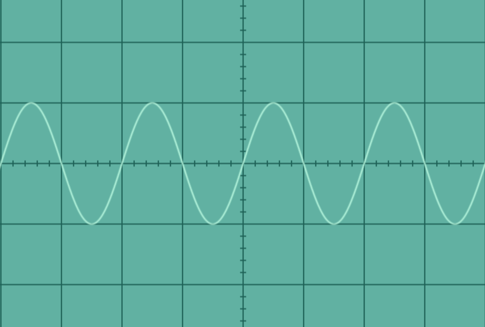
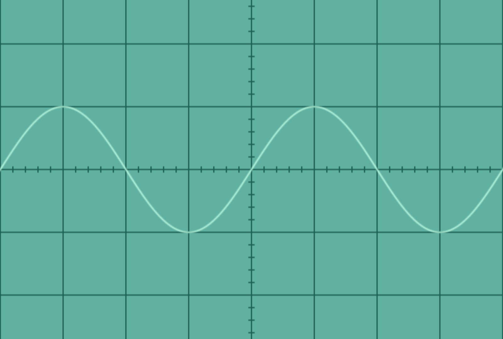
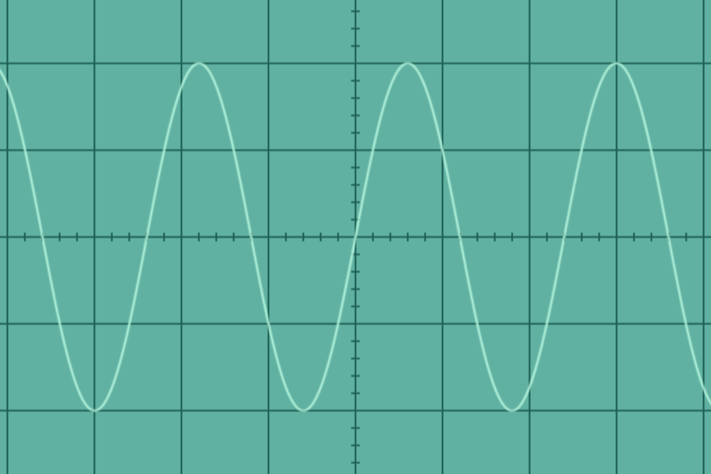
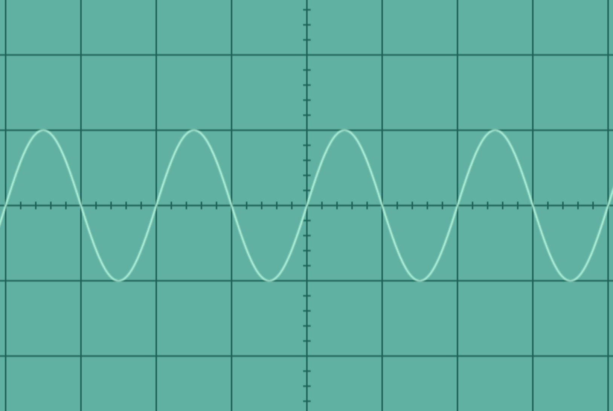
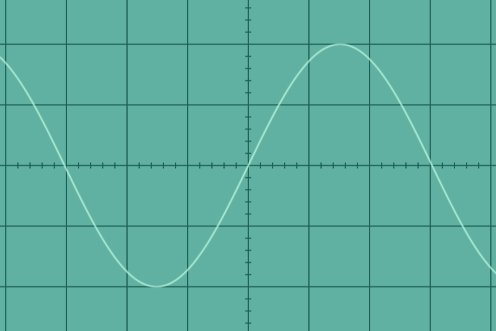

<script>
var quizJSON = {
    "info": {
        "name":    "",
        "main":    "",
        "results": "<p>You can learn all about oscilloscopes and how they work with our <a href='/demos/virtual-oscilloscope/'>interactive virtual oscilloscope</a>.</p>"
    },
    "questions": [
        { // Question 1 - Multiple Choice, Single True Answer
            "q": "If this oscilloscope's time base is set to 1ms/div, what is the frequency of the wave shown in the image below? <br/> ",
            "a": [
                {"option": "100 Hz",      "correct": false},
                {"option": "250 Hz",     "correct": false},
                {"option": "500 Hz",      "correct": true},
                {"option": "1000 Hz",     "correct": false} // no comma here
            ],
            "correct": "<p><span>Correct, well done!</span> The period of the wave is 2 divisions, so 2 ms. Therefore the frequency is 1/0.002 which is 500 Hz. </p>",
            "incorrect": "<p><span>Sorry, that's incorrect.</span> The period of the wave is 2 divisions, or 2ms. So the frequency is 1/0.002 which is <strong>500 Hz</strong>. </p>" // no comma here
        },
        { 
            "q": "If this oscilloscope's time base is set to 1ms/div, what is the frequency of the wave shown in the image below? <br/> ",
            "a": [
                {"option": "100 Hz",      "correct": false},
                {"option": "250 Hz",     "correct": true},
                {"option": "500 Hz",      "correct": false},
                {"option": "1000 Hz",     "correct": false} // no comma here
            ],
            "correct": "<p><span>Correct, well done!</span> The period of the wave is 4 divisions, so 4 ms. Therefore the frequency is 1/0.004 which is 250 Hz. </p>",
            "incorrect": "<p><span>Sorry, that's incorrect.</span> The period of the wave is 2 divisions, or 2ms. So the frequency is 1/0.002 which is <strong>250 Hz</strong>. </p>" // no comma here
        },
        { 
            "q": "If this oscilloscope's Volts/div setting is 10, what is the amplitude of the wave shown in the image below? <br/> ",
            "a": [
                {"option": "5 V",      "correct": false},
                {"option": "10 V",     "correct": false},
                {"option": "20 V",      "correct": true},
                {"option": "40 V",     "correct": false} // no comma here
            ],
            "correct": "<p><span>Correct, well done!</span> The amplitude of the wave is measured from the mid-point of the wave to its peak (or trough), which is 2 divisions. Therefore the amplitude is 2 x 10 which is 20 V.</p>",
            "incorrect": "<p><span>Sorry, that's incorrect.</span> The amplitude of the wave is measured from the mid-point of the wave to its peak (or trough), which is 2 divisions. Therefore the amplitude is 2 x 10 which is 20 V.</p>" // no comma here
        },
       { 
            "q": "If this oscilloscope's time base is set to 5ms/div, what is the frequency of the wave shown in the image below? <br/> ",
            "a": [
                {"option": "100 Hz",      "correct": true},
                {"option": "250 Hz",     "correct": false},
                {"option": "500 Hz",      "correct": false},
                {"option": "1000 Hz",     "correct": false} // no comma here
            ],
            "correct": "<p><span>Correct, well done!</span> The period of the wave is 2 divisions, so 10 ms. Therefore the frequency is 1/0.010 which is 100 Hz. </p>",
            "incorrect": "<p><span>Sorry, that's incorrect.</span> The period of the wave is 2 divisions, so 10 ms. Therefore the frequency is 1/0.010 which is 100 Hz. </p>" // no comma here
        },
        { // Question 5
            "q": "The amplitude of the wave shown in the image below is 4 Volts. What is the volts/div of the oscilloscope set to? <br/> ",
            "a": [
                {"option": "1 volts/div",      "correct": false},
                {"option": "2 volts/div",     "correct": true},
                {"option": "5 volts/div",      "correct": false},
                {"option": "10 volts/div",     "correct": false} // no comma here
            ],
            "correct": "<p><span>Correct, well done!</span> We are told the amplitude is 4 volts and can see that this is 2 divisions. Therefore the oscilloscope setting must be 4/2 which is 2 volts/div.</p>",
            "incorrect": "<p><span>Sorry, that's incorrect.</span> We are told the amplitude is 4 volts and can see that this is 2 divisions. Therefore the oscilloscope setting must be 4/2 which is 2 volts/div. </p>" // no comma here
        } // no comma here
    ]
};
</script>